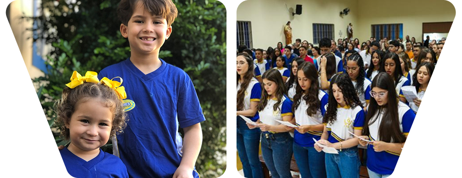

Proposta Pedagógica Geral
Considerando a dinâmica social que se opera na atualidade, a proposta pedagógica pauta-se em uma pedagogia, voltada para a formação do ser humano como agente da história e construtor do conhecimento, primando pelo seu desenvolvimento intelectual e humano para o exercício consciente da cidadania, aliado à construção de competências para as práticas sociais em uma sociedade complexa e globalizada. Sob essa ótica, a proposta pedagógica, tem como objetivo principal o desenvolvimento de competências e habilidades por parte do estudante, visando à obtenção de resultados exitosos quanto à sua aprendizagem.O Colégio Monsenhor Adelmar da Mota Valença - CMA, ao elaborar sua proposta pedagógica, dá cumprimento ao que determina a Lei de Diretrizes e Bases da Educação Nacional (Lei Federal n° 9.394/96).
E, para ofertar a Educação Infantil, trata de cumprir a Emenda Constitucional nº 59/2009 – Incluída na LDB em 2013 – como também a Resolução CNE/CEB nº 5/2009.Na oferta do Ensino Fundamental, especialmente, trata de cumprir as Leis Federais de Nºs 11.114 de 16 de maio de 2005 e 11.274 de 06 de fevereiro de 2006, as quais dispõem sobre a matrícula aos seis anos de idade no Ensino Fundamental e a implantação de uma nova organização para este nível de ensino com duração de nove anos de escolarização. Como também nas demandas referentes ao Ensino Médio, que enquanto última etapa de Ensino da Educação Básica se embasa na Resolução nº 2/2012, a qual define Diretrizes Curriculares Nacionais para o Ensino Médio (DCNEM) e na Lei Nº 13.415/2017, conforme alterações no Art. 35-A e Art. 36 & 1º da LDB N° 9.394/96 .
Alinhado às políticas de ensino do sistema educacional nas esferas nacional e estadual, o Colégio Monsenhor Adelmar da Mota Valença – CMA inicia a presente Proposta Pedagógica com a transcrição na íntegra da p.31 e trechos da p. 32 da BNCC homologada em 20/12/2017. A expressão educação “pré-escolar”, utilizada no Brasil até a década de 1980, expressava o entendimento de que a Educação Infantil era uma etapa anterior, independente e preparatória para a escolarização, que só teria seu começo no Ensino Fundamental. Situava-se, portanto, fora da educação formal (BNCC, p.31).
Para o Colégio Monsenhor Adelmar da Mota Valença - CMA configuram objetivos de ensino aqueles pertinentes às intenções educacionais e prerrogativas desta Instituição escolar, apregoadas em seu Projeto Político Pedagógico e alinhadas ao que é consensuado no planejamento, em comum acordo das partes: coordenação pedagógica e corpo docente desta etapa de ensino.
- Organização e proposição de experiências que permitam às crianças conhecer a si e ao outro e de conhecer e compreender as relações com a natureza, com a cultura e com a produção científica, que se traduzem nas práticas de cuidados pessoais (alimentar-se, vestir-se, higienizar-se), nas brincadeiras, nas experimentações com materiais variados, na aproximação com a literatura e na interação com as pessoas;
- Acompanhar tanto essas práticas quanto as aprendizagens das crianças, realizando a observação da trajetória de cada criança e de todo o grupo – suas conquistas, avanços, possibilidades e aprendizagens;
- Evidenciar a progressão ocorrida durante o período observado, sem intenção de seleção, promoção ou classificação de crianças em “aptas” e “não aptas”, “prontas” ou “não prontas”, “maduras” ou “imaturas”;
- Mediante a necessidade de imprimir intencionalidade educativa às práticas pedagógicas na Educação Infantil - tanto na creche quanto na pré-escola -, as condições para que as crianças aprendam em situações nas quais possam desempenhar um papel ativo em ambientes que as convidem a vivenciar desafios e a sentirem-se provocadas a resolvê-los, como também possam construir significados sobre si, os outros e o mundo social e natural.
- E, tendo em vista os eixos estruturantes das práticas pedagógicas e as competências gerais da Educação Básica propostas pela BNCC, seis direitos de aprendizagem e desenvolvimento asseguram na Educação Infantil;
- Conviver com outras crianças e adultos, em pequenos e grandes grupos, utilizando diferentes linguagens, ampliando o conhecimento de si e do outro, o respeito em relação à cultura e às diferenças entre as pessoas.
- Brincar cotidianamente de diversas formas, em diferentes espaços e tempos, com diferentes parceiros (crianças e adultos), ampliando e diversificando seu acesso a produções culturais, seus conhecimentos, sua imaginação, sua criatividade, suas experiências emocionais, corporais, sensoriais, expressivas, cognitivas, sociais e relacionais.
- Participar ativamente, com adultos e outras crianças, tanto das atividades propostas pelo educador quanto da realização das atividades da vida cotidiana, tais como a escolha das brincadeiras, dos materiais e dos ambientes, desenvolvendo diferentes linguagens e elaborando conhecimentos, decidindo e se posicionando.
- Explorar movimentos, gestos, sons, formas, texturas, cores, palavras, emoções, transformações, relacionamentos, histórias, objetos, elementos da natureza - na escola e fora dela - ampliando seus saberes sobre a cultura, em suas diversas modalidades: as artes, a escrita, a ciência e a tecnologia.
- Expressar, como sujeito dialógico, criativo e sensível, suas necessidades, emoções, sentimentos, dúvidas, hipóteses, descobertas, opiniões, questionamentos, por meio de diferentes linguagens.
- Conhecer-se e construir sua identidade pessoal, social e cultural, constituindo uma imagem positiva de si e de seus grupos de pertencimento, nas diversas experiências de cuidados, interações, brincadeiras e linguagens vivenciadas na instituição escolar e em seu contexto familiar e comunitário.
Ensino fundamental
anos iniciais e finais

A Educação Fundamental Anos Iniciais e Finais na Base Nacional Comum Curricular. O Colégio Monsenhor Adelmar da Mota Valença - CMA, ao elaborar esta Proposta, dá cumprimento ao que determina o art. 32 da Lei de Diretrizes e Bases da Educação Nacional (Lei Federal n° 9.394/96); a Resolução nº 7, de 14 de dezembro de 2010 – CNE/CEB; o Parecer nº 11, de 7 de julho de 2010 e, especialmente, trata de cumprir as Leis Federais de Nºs 11.114 de 16 de maio de 2005 e 11.274 de 06 de fevereiro de 2006, as quais dispõem sobre a matrícula aos seis anos de idade no Ensino Fundamental e a implantação de uma nova organização para este nível de ensino com duração de nove anos de escolarização.
Portanto, a Proposta Pedagógica, ora elaborada, pretende subsidiar o ato de ensinar e aprender, cujo desenvolvimento deverá dar-se no contexto da educação escolar, finalidade básica da Instituição, aliada à sua proposta da formação humana do estudante, à luz da mensagem evangélica, como missão norteadora da entidade mantenedora. Assim é que, o principal enfoque deste instrumento, deverá pautar-se na comunicação e no diálogo, visto que dialogar não é uma prática simples, ao contrário, é desafiante, pois faz com que uma série de ideias sejam confrontadas pelos diferentes interesses e visões dos agentes sociais envolvidos.
Ao longo e ao término do Curso, o estudante matriculado no Ensino Fundamental de Nove Anos de duração no Colégio Monsenhor Adelmar da Mota Valença - CMA deverá:
- Adquirir e construir conhecimentos através de diferentes fontes de informações e recursos tecnológicos presentes no ambiente escolar e em setores diversos onde vive e convive;
- Compreender a cidadania como participação social e política, assim como o exercício de direitos e deveres políticos, civis e sociais, adotando, no cotidiano, atitudes de solidariedade, cooperação, respeito e repúdio às injustiças;
- Compreender aspectos do mundo físico e natural e a interação do ser humano com o ambiente, considerando a utilização das tecnologias presentes na sociedade contemporânea em função da manutenção da vida;
- Construir a noção de identidade nacional e pessoal através da caracterização social, material e cultural brasileira;
- Desenvolver o conhecimento ajustado a si mesmo e o sentimento de confiança em suas capacidades afetiva, cognitiva, ética, estética e de inter-relações;
- Exercer a cidadania nas suas dimensões sociais, políticas, civis e culturais de forma consciente, crítica, justa e solidária em processos de convivência social;
- Identificar características fundamentais do Brasil nas dimensões sociais, materiais e culturais, como possibilidades presumíveis para construir progressivamente a noção de identidade nacional e pessoal e o sentimento de pertinência ao país;
- Situar a pluralidade sociocultural de outros países em relação à do Brasil, valorizando esta e posicionando-se contra possíveis discriminações baseadas em diferenças existentes neste contexto;
- Interpretar e usufruir as produções culturais em contextos públicos e privados, atendendo às diferentes intenções e situações de comunicação em espaços de vivências;
- Perceber-se integrante, dependente e agente transformador do ambiente, identificando seus elementos e as interações entre eles, contribuindo ativamente para a melhoria do meio ambiente em função da preservação da vida no Planeta;
- Posicionar-se de maneira crítica, responsável e construtiva nas diferentes situações sociais, utilizando o dialogo como forma de mediar conflitos e de tomar decisões com impacto positivo na coletividade;
- Questionar a realidade utilizando o pensamento lógico, a criatividade, a análise crítica e intuitiva, relacionando procedimentos e verificando sua adequação na formulação e na resolução de situações-problema do cotidiano;
- Utilizar as diferentes linguagens verbais, matemáticas, gráficas, plásticas e corporais, como meio para produzir, expressar e comunicar ideias, em diferentes contextos sociais e culturais.
O Colégio Monsenhor Adelmar da Mota Valença - CMA, ao elaborar esta Proposta, dá cumprimento ao que determina a Lei de Diretrizes e Bases da Educação Nacional (Lei Federal n° 9.394/96). E, especialmente, trata de cumprir as demandas referentes ao Ensino Médio, que enquanto última etapa de Ensino da Educação Básica se embasa na Lei de Diretrizes e Bases – LDB Nº 9394/96 (Artigos 35 e 36), como também na Resolução/CNE nº 2/2012, a qual define Diretrizes Curriculares Nacionais para o Ensino Médio (DCNEM) e na Lei Nº 13. 415/2017, conforme alterações no Art. 35-A e Art. 36 & 1º da LDB Nº 9394/96.
Ao longo e ao término do Curso, o estudante matriculado no Ensino Médio no Colégio Monsenhor Adelmar da Mota Valença - CMA deverá:
- Entender que a construção de saberes, envolvendo não só conceitos como procedimentos e atitudes, socialmente relevantes, deverá garantir o exercício da cidadania, além de habilidades para o aperfeiçoamento cultural;
- Atuar como cidadão, consciente e responsável, respaldado nos princípios da ética democrática, dignidade, participação, respeito mútuo, justiça e responsabilidade, considerando o diálogo e solidariedade, como fatores relevantes em convivência social;
- Identificar-se como usuário e interlocutor de linguagens que estruturam uma identidade cultural própria;
- Explicitar formas de articulação das disciplinas curriculares para organizar, conduzir e avaliar o seu aprendizado, face à Proposta Pedagógica deste Estabelecimento de Ensino;
- Obter informações contidas em diferentes fontes e expressá-las em diferentes linguagens, associando-as às soluções possíveis para situações-problema de diversas naturezas, em seu cotidiano e no contexto social no qual está inserido;
- Reconhecer e avaliar o caráter ético do conhecimento científico e tecnológico e utilizar esses conhecimentos no exercício da cidadania, em prol da comunidade local, regional e global;
- Apresentar uma postura perspicaz, investigadora e criativa diante do próprio conhecimento e das distintas práticas pedagógicas que se operam no ambiente escolar.